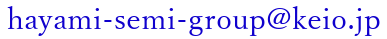

| 10月04日 | ：3年生の研究報告1 |
| 10月11日 | ：3年生の研究報告2 |
| 10月18日 | ：3年生の研究報告3 |
| 10月25日 | ：3年生の研究報告4 |
| 11月01日 | ：就活心得：ベイ・カレント・コンサルティング 森田氏 |
| 11月08日 | ：3年生の研究報告5 |
| 11月15日 | ：3年生の研究報告6 |
| 11月29日 | ：アステラス製薬会長の講演 with 久保ゼミ |
| 12月06日 | ：4年生の卒論研究報告1 |
| 12月13日 | ：4年生の卒論研究報告2 |
| 12月20日 | ：4年生の卒論研究報告3 |
| 12月27日 | ：4年生の卒論研究報告4 |
| 01月17日 | ：4年生の卒論研究報告5 |
| 01月24日 | ：4年生の卒論研究報告(予備) |
| 4月12日 | 自己紹介と雑談 (写真撮影) |
| 4月19日 | 散歩・クイズ |
| 4月26日 | お勉強1 |
| 5月03日 | お勉強2 |
| 5月10日 | お勉強3 |
| 5月17日 | お勉強4 |
| 5月24日 | お勉強5 |
| 5月31日 | 3年生研究計画発表1 |
| 6月07日 | 3年生研究計画発表2 |
| 6月14日 | 3年生研究計画発表3 |
| 6月21日 | 国際大学教授横瀬氏の講演 |
| 6月28日 | 3年生研究計画発表4 |
| 7月05日 | 3年生研究計画発表5 |
| 7月12日 | 3年生研究計画発表6 |
| 7月19日 | 講演：アステラス製薬ヘルスケア・ポリシー部の方々 |
| with 久保ゼミ |
| 11月28-29日(月・火) | ：一次選考仮登録 |
| 12月5日(月) | ：一次選考願書本登録(ゼミナール委員会) |
| ESを  まで，送付（12月5日中に）ESがないと連絡先がわからないので，面接時刻を伝えられません． | |
| 12月7日(水)以降 | ：面接の時刻とZoom URL を送付 |
| 準備にちょっと時間がかかるかもしれません． | |
| 成績表を返信． | |
| 12月17日(土) | ：一次選考 (ゼミナール委員会の決定事項) |
| 4月13日 | 自己紹介と雑談 (写真撮影) |
| 4月20日 | 散歩？ |
| 4月27日 | お勉強1 Heart Cv |
| 5月04日 | お勉強2 |
| 5月11日 | お勉強3 |
| 6月01日 | 3年生研究計画発表1 |
| 5月18日 | お勉強4 |
| 5月25日 | お勉強5 |
| 6月08日 | 3年生研究計画発表2 |
| 6月15日 | 3年生研究計画発表3 |
| 6月22日 | 3年生研究計画発表4 |
| 6月29日 | 3年生研究計画発表5 |
| 7月06日 | 3年生研究計画発表6 |
| 7月13日 | 秋学期の予定 |
| 10月05日 | ：ゼミ開始 お勉強1 |
| 10月12日 | ：お勉強2 |
| 10月19日 | ：お勉強3 PythonでYolo7 |
| 10月26日 | ：お勉強4 |
| 11月02日 | ：3年生の研究報告1 |
| 11月09日 | ：3年生の研究報告2 |
| 11月16日 | ：3年生の研究報告3 |
| 11月30日 | ：4年生の卒論研究報告1 |
| 12月07日 | ：4年生の卒論研究報告2 |
| 12月14日 | ：4年生の卒論研究報告3 |
| 12月21日 | ：4年生の卒論研究報告4 |
| 01月11日 | ：4年生の卒論研究報告5 |
| 01月18日 | ：4年生の卒論研究報告6 |
| 01月25日 | ：4年生の卒論研究報告(予備) |
| 3月3-4日(木・金) | ：一次選考仮登録 |
| 3月11日(金) | ：一次選考願書本登録(ゼミナール委員会) |
| ESと成績表を まで，送付（3月11日中に） | |
| 3月16日(木) | ：一次選考 (ゼミナール委員会の決定事項) |
| 10月6日 | ：ゼミ開始．3年生の研究報告． |
| 10月7日 | ：ゼミ開始．3年生の研究報告． |
| 11月18日 | ：惑星観察会． |
| 9月30日 | ：3年生の研究の相談会2 |
| 9月23日 | ：3年生の研究の相談会1 |
| 7月22日 | 春学期最後の締め・前は12月にやっていたクイズ大会を7月にも |
| 6月10日～7月15日 | 3年生の研究計画発表，雑談 |
| 5月6日～6月3日 | Rのプログラムやpythonのプログラム，雑談 |
| 4月29日 | 役職決めた，OGと雑談 |
| 4月22日 | OGと雑談 |
| 4月15日 | 有志のみ自己紹介とOGと雑談 |
| 4月8日 | 有志のみ自己紹介と雑談 |
| 3月25-26日(木) | ：一次選考仮登録 |
| 3月31日(火) | ：一次選考本登録 |
| 4月2日(木) | ：一次選考 (ゼミナール委員会の決定) |
| … | … |
| 5月6日(水) | ：ゼミ開始 @ 311 パソコン教室 |